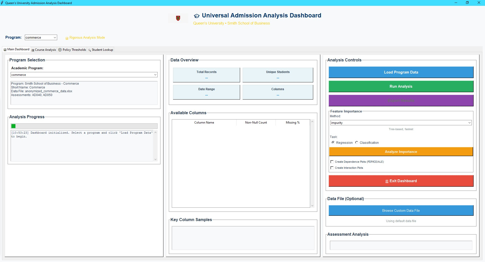
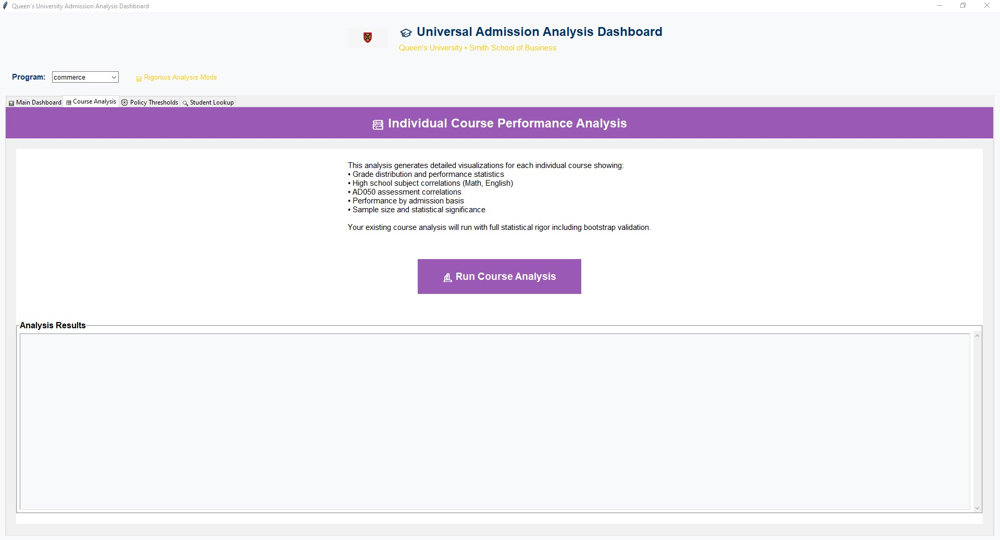

Admission Analysis Dashboard
A predictor tool that analyzes admitted Commerce and Engineering students against their first-year GPAs. Built with Random Forest to find what actually predicts success at Queen's, and the Commerce findings led to higher admission thresholds.
The Question
Queen's collects mountains of data on every admitted student: high school average, individual subject grades, supplementary application scores, where they came from, what they applied to. After they enroll, the university tracks their first-year GPA. The question nobody had time to answer properly: which of those admission inputs actually correlate with first-year performance?
I built a predictor tool that takes the admission data and the first-year GPAs, and runs a Random Forest model to rank what predicts success. Same architecture for both Commerce and Engineering, different datasets and different findings.
Tool 1: Commerce Predictor
The first version. I got access to 10 years of Commerce student data, around 5,600 students, with both their admission inputs and their first-year GPAs. I built a 4-tab dashboard for exploring the relationships:
- Overall high school average vs. first-year GPA
- Math grade vs. first-year GPA
- English grade vs. first-year GPA
- Supplementary application score vs. first-year GPA
Plus a config-file system so the same tool could be retargeted at any program without code changes. That's what made adapting it for Engineering trivial later on.

Commerce Findings
I used a Random Forest model to rank which factors were the best predictors of first-year success. The results surprised people:
Best predictor: Overall high school average (no surprise)
Second: Math grade
Third: English grade
Fourth: Supplementary application score, and it had a negative correlation
That last one caught everyone off guard. The supp app, essays and extracurriculars and all the "soft" stuff, actually had a slight negative correlation with first-year GPA. Students who wrote great applications weren't necessarily performing better. Maybe they were better at selling themselves than doing the work. Maybe the graders were looking for the wrong things. Either way, it was data worth discussing.
Commerce Impact
I'm not going to claim I walked into a room and said "change your thresholds" and they did it. That's not how universities work. But the analysis was part of the conversation.
The Commerce program eventually raised their admission thresholds:
- Math and English minimums: 80% to 85%
- Overall high school average: 87% to 90%
Was that directly because of my analysis? I don't know. But the data was there, people saw it, and the change aligned with what the numbers suggested. That felt meaningful.

Tool 2: Engineering Predictor
Once the Commerce version was working, I pointed the same tool at Engineering: 10 years of admitted students, around 8,700 of them, same kind of admission inputs against first-year GPA.
The dataset is bigger and the program structure is different (six common-first-year disciplines vs. one Commerce track), so the analysis required some rethinking around the predictor variables and how to handle program transfers.
The model is built and running. The findings are still being reviewed and no policy changes have come from it yet. I'd rather not publish numbers I'm still validating, so this section will stay light until the analysis is signed off.
Technical Stack
Python and Tkinter
Desktop app for sensitive internal data, no cloud anything
Pandas and openpyxl
Wrangling brutal Excel exports into usable dataframes
SQLite
Local database for fast querying, way better than filtering in memory
Scikit-learn
Random Forest for predictor analysis
Matplotlib
Embedded visualizations and scatter plots
Config Files
JSON configs so the same tool works for any program
By the Numbers
The Struggle: Learning to See Data
The hardest part wasn't the coding, it was learning how to analyze. Before this, I thought data analysis was just making charts. It's not. It's asking the right questions, checking your assumptions, understanding what correlations actually mean (and don't mean).
I spent a lot of time second-guessing myself. "Is this correlation real or did I mess something up?" "Does this p-value actually matter?" "Am I seeing a pattern or just noise?" Learning to look at things from different angles, controlling for variables, checking for confounders, that was the real education.
What I Learned
- Data doesn't speak for itself. You have to ask the right questions. The same dataset can tell different stories depending on how you slice it.
- Correlation isn't causation, but it's still useful. I can't prove the supp app causes worse performance. But the correlation is worth investigating.
- Build tools that answer questions. Users don't care about your database schema. They have questions, make the tool answer them fast.
- Config-driven beats hardcoded every time. Pointing the same tool at Engineering took an afternoon, not a rewrite.